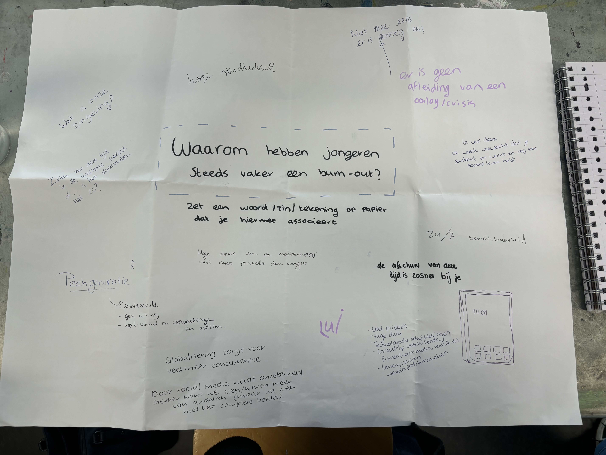

ONDERZOEK - RONDVRAAG OP DE HU
Als
lesopdracht moesten we mensen op de HU aanspreken met een vraag/opdracht over jouw vraagstuk. Ik heb
mensen gevraagd waarom zij denken dat jongeren steeds vaker een burn-out hebben. Ik heb zowel
studenten als docenten aangesproken om een wijdere onderzoeksgroep te krijgen.
Veel van
deze antwoorden komen overeen met wat ik uit mijn deskresearch heb gehaald maar er zitten ook een
paar interessante antwoorden tussen zoals:
“Wat
is onze zingeving”
“Globalisering zorgt voor meer concurrentie”
“De afschuw van de tijd is
zo snel bij je”